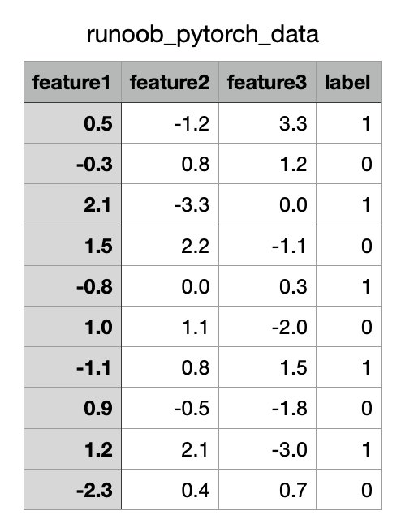

PyTorch データセット
深層学習タスクにおいて、データの読み込みと処理は極めて重要な要素です。
PyTorch は強力なデータ読み込み・処理ツールを提供しており、主に以下のものがあります。
torch.utils.data.Dataset：データセットの抽象クラス。カスタマイズして実装する必要があります。__len__（データセットサイズ）と__getitem__（インデックスでサンプルを取得）。torch.utils.data.TensorDataset：テンソルベースのデータセットで、データとラベルのペアの処理に適しており、バッチ処理と反復を直接サポートします。torch.utils.data.DataLoader：Dataset をカプセル化したイテレータで、バッチ処理、データシャッフル、マルチスレッド読み込みなどの機能を提供し、モデルトレーニングへのデータ入力を容易にします。torchvision.datasets.ImageFolder：フォルダから画像データを読み込みます。各サブフォルダが1つのカテゴリを表し、画像分類タスクに適しています。
PyTorch 組み込みデータセット
PyTorch は torchvision.datasets モジュールを通じて、多くの一般的なデータセットを提供しています。例：
- MNIST：手書き数字画像データセット。画像分類タスクに使用されます。
- CIFAR：10カテゴリ、60000枚の32x32カラー画像を含むデータセット。画像分類タスクに使用されます。
- COCO：一般的な物体検出、セグメンテーション、キーポイント検出用データセット。330k以上の画像と2.5Mの物体インスタンスを含む大規模データセットです。
- ImageNet：1400万枚以上の画像を含み、画像分類や物体検出などのタスクに使用されます。
- STL-10：100k枚の96x96カラー画像を含むデータセット。画像分類タスクに使用されます。
- Cityscapes：5000枚の詳細なアノテーション付き都市街路シーン画像を含むデータセット。セマンティックセグメンテーションタスクに使用されます。
- SQUAD：機械読解タスク用のデータセット。
上記のデータセットは torchvision.datasets モジュールの関数で読み込むことができ、カスタム方式で他のデータセットを読み込むこともできます。
torchvision と torchtext
- torchvision： 画像データ処理関連のAPIとデータセットインターフェースを提供する画像ライブラリです。データセット読み込み関数や一般的な画像変換が含まれます。
- torchtext： 自然言語処理ツールキットで、テキストデータ処理およびモデリングのツールを提供します。データ前処理とデータ読み込みの方法が含まれます。
torch.utils.data.Dataset
Dataset は PyTorch においてデータセットを抽象化するためのクラスです。
カスタムデータセットは torch.utils.data.Dataset を継承し、以下の2つのメソッドをオーバーライドする必要があります：
__len__：データセットのサイズを返します。__getitem__：インデックスでデータサンプルとそのラベルを取得します。
例
from torch.utils.data import Dataset
# カスタムデータセット
class MyDataset(Dataset):
def __init__(self, data, labels):
# データ初期化
self.data = data
self.labels = labels
def __len__(self):
# データセットのサイズを返す
return len(self.data)
def __getitem__(self, idx):
# インデックスでデータとラベルを返す
sample = self.data[idx]
label = self.labels[idx]
return sample, label
# サンプルデータを生成
data = torch.randn(100, 5) # 100個のサンプル、各サンプルは5つの特徴を持つ
labels = torch.randint(0, 2, (100,)) # 100個のラベル、値は0または1
# データセットをインスタンス化
dataset = MyDataset(data, labels)
# データセットをテスト
print("データセットサイズ:", len(dataset))
print("0番目のサンプル:", dataset[0])
出力結果は以下の通りです：
数据集大小: 100 第 0 个样本: (tensor([-0.2006, 0.7304, -1.3911, -0.4408, 1.1447]), tensor(0))
torch.utils.data.DataLoader
DataLoader は PyTorch が提供するデータローダーで、データセットをバッチ単位で読み込むために使用されます。
以下の機能を提供します：
- バッチ読み込み：設定により
batch_size。 - データシャッフル：設定により
shuffle=True。 - マルチスレッド高速化：設定により
num_workers。 - 反復アクセス：バッチ単位でデータに簡単にアクセスできます。
例
from torch.utils.data import Dataset
from torch.utils.data import DataLoader
# カスタムデータセット
class MyDataset(Dataset):
def __init__(self, data, labels):
# データ初期化
self.data = data
self.labels = labels
def __len__(self):
# データセットのサイズを返す
return len(self.data)
def __getitem__(self, idx):
# インデックスでデータとラベルを返す
sample = self.data[idx]
label = self.labels[idx]
return sample, label
# サンプルデータを生成
data = torch.randn(100, 5) # 100個のサンプル、各サンプルは5つの特徴を持つ
labels = torch.randint(0, 2, (100,)) # 100個のラベル、値は0または1
# データセットをインスタンス化
dataset = MyDataset(data, labels)
# DataLoader をインスタンス化
dataloader = DataLoader(dataset, batch_size=10, shuffle=True, num_workers=0)
# DataLoader を反復処理
for batch_idx, (batch_data, batch_labels) in enumerate(dataloader):
print(f"バッチ {batch_idx + 1}")
print("データ:", batch_data)
print("ラベル:", batch_labels)
if batch_idx == 2: # 最初の3バッチのみ表示
break
出力結果は以下の通りです：
批次 1
数据: tensor([[ 0.4689, 0.6666, -1.0234, 0.8948, 0.4503],
[ 0.0273, -0.4684, -0.7762, 0.7963, 0.2168],
[ 1.0677, -0.3502, -0.9594, -1.1318, -0.2196],
[-1.4989, 0.0267, 1.0405, -0.7284, 0.2335],
[-0.5887, -0.4934, 1.6283, 1.4638, 0.0157],
[-1.1047, -0.6550, -0.0381, 0.3617, -1.2792],
[ 0.3592, -0.8264, 0.0231, -1.5508, 0.6833],
[-0.6835, 0.6979, 0.9048, -0.4756, 0.3003],
[ 1.1562, -0.4516, -1.2415, 0.2859, 0.5837],
[ 0.7937, 1.5316, -0.6139, 0.7999, 0.5506]])
标签: tensor([0, 1, 1, 1, 1, 0, 1, 1, 0, 0])
批次 2
数据: tensor([[-0.0388, -0.3658, 0.8993, -1.5027, 1.0738],
[-0.6182, 1.0684, -2.3049, 0.8338, 0.1363],
[-0.5289, 0.1661, -0.0349, 0.2112, 1.4745],
[-0.3304, -1.2114, -0.2982, -0.3006, 0.5252],
[-1.4394, -0.3732, 1.0281, 0.5754, 1.0081],
[ 0.8714, -0.1945, -0.2451, -0.2879, -2.0520],
[ 0.0235, 0.4360, 0.1233, 0.0504, 0.5908],
[ 0.5927, 0.1785, -0.9052, -0.9012, 0.8914],
[ 0.4693, 0.5533, -0.1903, 0.0267, 0.4077],
[-1.1683, 1.6699, -0.4846, -0.7404, 0.3370]])
标签: tensor([1, 1, 0, 1, 0, 1, 1, 0, 1, 1])
批次 3
数据: tensor([[ 0.2103, -0.7839, 1.4899, 2.2749, -0.7548],
[-1.2836, 1.0025, -1.1162, -0.4261, 1.0690],
[-0.7969, 1.0418, -0.7405, 0.8766, 0.2347],
[-1.1071, 1.8560, -1.2979, -0.8364, -0.2925],
[-1.0488, 0.4802, -0.6453, 0.2009, 0.5693],
[ 0.8883, 0.4619, -0.2087, 0.2189, -0.3708],
[-1.4578, 0.3629, 1.8282, 0.5353, -1.1783],
[-1.2813, 0.5129, -0.4598, -0.2131, -1.2804],
[ 1.7831, 1.1730, -0.2305, -0.6550, 0.1197],
[-0.9384, -0.0483, 1.9626, 0.3342, 0.1700]])
标签: tensor([0, 0, 0, 1, 0, 1, 1, 1, 0, 1])組み込みデータセットの使用
PyTorch は複数の一般的なデータセットを提供しており、torchvision に格納されています。特に画像タスクに適しています。
MNIST データセットの読み込み:
例
import torchvision.transforms as transforms
from torch.utils.data import DataLoader
# データ前処理を定義
transform = transforms.Compose([
transforms.ToTensor(), # テンソルに変換
transforms.Normalize((0.5,), (0.5,)) # 標準化
])
# トレーニングデータセットを読み込み
train_dataset = torchvision.datasets.MNIST(
root='./data', train=True, transform=transform, download=True)
# DataLoader を使用してデータを読み込み
train_loader = DataLoader(train_dataset, batch_size=32, shuffle=True)
# 1つのバッチのデータを確認
data_iter = iter(train_loader)
images, labels = next(data_iter)
print(f"バッチ画像サイズ: {images.shape}") # 出力形状は [batch_size, 1, 28, 28]
print(f"バッチラベル: {labels}")
出力結果は以下の通りです：
批次图像大小: torch.Size([32, 1, 28, 28])
批次标签: tensor([0, 4, 9, 8, 1, 3, 8, 1, 7, 2, 1, 1, 1, 2, 6, 3, 9, 7, 6, 9, 4, 9, 7, 1,
3, 7, 3, 0, 7, 7, 6, 7])
Dataset と DataLoader のカスタム活用
以下は、CSVファイルをデータソースとして、カスタム Dataset と DataLoader を使用してデータを読み取る例です。
CSVファイルの内容は以下の通りです（ダウンロードrunoob_pytorch_data.csv）：

例
import pandas as pd
from torch.utils.data import Dataset, DataLoader
# カスタム CSV データセット
class CSVDataset(Dataset):
def __init__(self, file_path):
# CSVファイルを読み取り
self.data = pd.read_csv(file_path)
def __len__(self):
# データセットのサイズを返す
return len(self.data)
def __getitem__(self, idx):
# .iloc を使用して位置ベースのインデックスを明示
row = self.data.iloc[idx]
# 特徴とラベルを分離
features = torch.tensor(row.iloc[:-1].to_numpy(), dtype=torch.float32) # 特徴
label = torch.tensor(row.iloc[-1], dtype=torch.float32) # ラベル
return features, label
# データセットと DataLoader をインスタンス化
dataset = CSVDataset("runoob_pytorch_data.csv")
dataloader = DataLoader(dataset, batch_size=4, shuffle=True)
# DataLoader を反復処理
for features, label in dataloader:
print("特徴:", features)
print("ラベル:", label)
break
出力結果は以下の通りです：
特征: tensor([[ 1.2000, 2.1000, -3.0000],
[ 1.0000, 1.1000, -2.0000],
[ 0.5000, -1.2000, 3.3000],
[-0.3000, 0.8000, 1.2000]])
标签: tensor([1., 0., 1., 0.])
tianqixin@Mac-mini runoob-test % python3 test.py
特征: tensor([[ 1.5000, 2.2000, -1.1000],
[ 2.1000, -3.3000, 0.0000],
[-2.3000, 0.4000, 0.7000],
[-0.3000, 0.8000, 1.2000]])
标签: tensor([0., 1., 0., 0.]) その他の拡張
クリックしてノートを共有
<p style="font-size:14px;">ノートは本記事の内容を拡張したものである必要があります！</p><br> <p style="font-size:12px;"><a href="../tougao.html" target="_blank">記事投稿はこちらをクリック</a></p> <p style="font-size:14px;"><a href="../w3cnote/runoob-user-test-intro.html" target="_blank">登録招待コードの取得方法</a></p> <h3 class="text-muted"><i class="fa fa-info-circle" aria-hidden="true"></i> ノートを共有する前に<a href=";.html" class="runoob-pop">ログイン</a>が必須です！</h3> <p><a href="../w3cnote/runoob-user-test-intro.html" target="_blank">登録招待コードの取得方法</a></p>